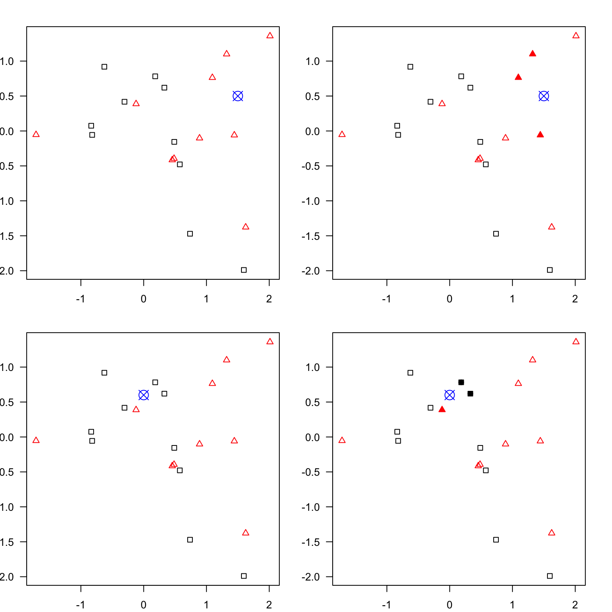
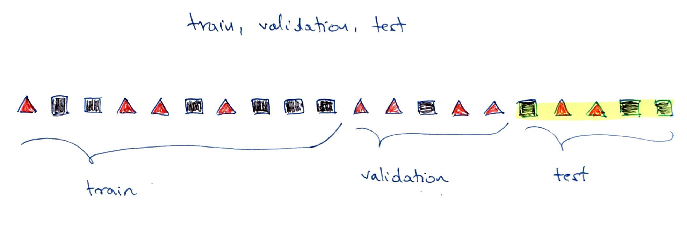
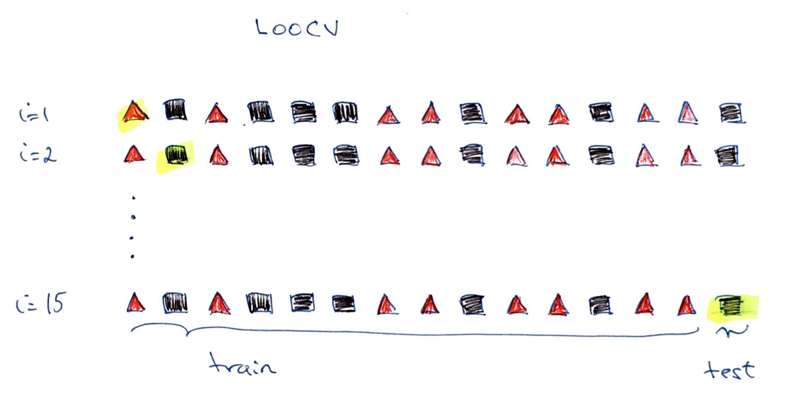
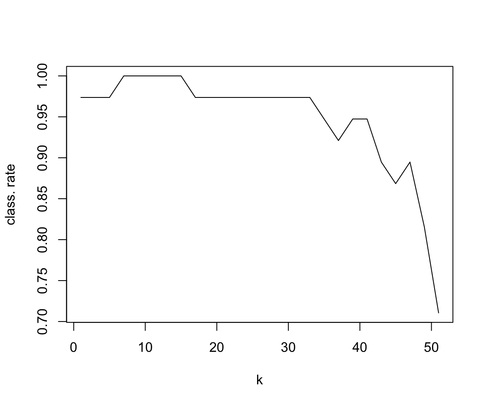

When we talked earlier about PCA and clustering, we were interested in finding patterns in the data. We treated data set as a whole, using all the samples, and we did not use samples labels in any way to find the components with the highest variables (PCA) or the number of clusters (k-means).
In supervised learning, we are using samples labels to build (train) our models. When then use these trained models for interpretation and prediction.
1.2 Supervised classification
Classification methods are algorithms used to categorize (classify) objects based on their measurements.
They belong under supervised learning as we usually start off with labeled data, i.e. observations with measurements for which we know the label (class) of.
If we have a pair \(\{\mathbf{x_i}, g_i\}\) for each observation \(i\), with \(g_i \in \{1, \dots, G\}\) being the class label, where \(G\) is the number of different classes and \(\mathbf{x_i}\) a set of exploratory variables, that can be continuous, categorical or a mix of both, then we want to find a classification rule\(f(.)\) (model) such that \[f(\mathbf{x_i})=g_i\]
1.3 KNN example

Figure 1.1: An example of k-nearest neighbours algorithm with k=3; in the top new observation (blue) is closest to three red triangales and thus classified as a red triangle; in the bottom, a new observation (blue) is closest to 2 black dots and 1 red triangle thus classified as a black dot (majority vote)
1.4 Data splitting
1.4.1 train, validation & test sets
Part of the issue of fitting complex models to data is that the model can be continually tweaked to adapt as well as possible.
As a results the trained model may not be generalizable to future data due to the added complexity that only works for given unique data set, leading to so called overfitting.
To deal with overconfident estimation of future performance we randomly split data into training data, validation data and test data.
Common split strategies include 50%/25%/25% and 33%/33%/33% splits for training/validation/test respectively
Training data: this is data used to fit (train) the classification model, i.e. derive the classification rule
Validation data: this is data used to select which parameters or types of model perform best, i.e. to validate the performance of model parameters
Test data: this data is used to give an estimate of future prediction performance for the model and parameters chosen

Figure 1.2: Example of splitting data into train (50%), validation (25%) and test (25%) set
1.4.2 cross validation
It could happen that despite random splitting in train/validation/test dataset one of the subsets does not represent data. e.g. gets all the difficult observation to classify.
Or that we do not have enough data in each subset after performing the split.
In K-fold cross-validation we split data into \(K\) roughly equal-sized parts.
We start by setting the validation data to be the first set of data and the training data to be all other sets.
We estimate the validation error rate / correct classification rate for the split.
We then repeat the process \(K-1\) times, each time with a different part of the data set to be the validation data and the remainder being the training data.
We finish with \(K\) different error of correct classification rates.
In this way, every data point has its class membership predicted once.
The final reported error rate is usually the average of \(K\) error rates.
Figure 1.3: Example of k-fold cross validaiton split (k = 3)
Leave-one-out cross-validation is a special case of cross-validation where the number of folds equals the number of instances in the data set.

Figure 1.4: Example of LOOCV, leave-out-out cross validation
1.5 Evaluating Classification Model Performance
To train the model we need some way of evaluating how well it works so we know how to tune the model parameters, e.g. change the value of \(k\) in KNN.
There are few measures being used that involve looking at the truth (labels) and comparing it to what was predicted by the model.
Common measures include: correct (overall) classification rate, missclassification rate, class specific rates, cross classification tables, sensitivity and specificity and ROC curves.
Correct (miss)classification rate
The simplest way to evaluate in which we count for all the \(n\) predictions how many times we got the classification right.
Calculate the distance between the query-instance (new observation) and all the training samples
Sort the distances and determine the nearest neighbors based on the \(k\)-th minimum distance
Gather the categories of the nearest neighbors
Use simple majority of the categories of the nearest neighbors as the prediction value of the new observation
Euclidean distance is a classic distance used with KNN; other distance measures are also used incl. weighted Euclidean distance, Mahalanobis distance, Manhatan distance, maximum distance etc.
choosing k
for problems with 2 classes, choose an odd number of \(k\) to avoid ties
use validation data to fit the model for a series of \(k\) values
pick the value of \(k\) which results in the best model (as assessed by the method of choice, e.g. overall classification rate)
Let’s see how it works in practice on a classical iris dataset containing measurements on petals and sepals as well as species information (setosa, versicolor, virginica)
library(class) # library with knn() functionlibrary(splitTools) # load library for data splitting## Warning: package 'splitTools' was built under R version 4.0.5# preview iris datasethead(iris)## Sepal.Length Sepal.Width Petal.Length Petal.Width Species## 1 5.1 3.5 1.4 0.2 setosa## 2 4.9 3.0 1.4 0.2 setosa## 3 4.7 3.2 1.3 0.2 setosa## 4 4.6 3.1 1.5 0.2 setosa## 5 5.0 3.6 1.4 0.2 setosa## 6 5.4 3.9 1.7 0.4 setosatail(iris)## Sepal.Length Sepal.Width Petal.Length Petal.Width Species## 145 6.7 3.3 5.7 2.5 virginica## 146 6.7 3.0 5.2 2.3 virginica## 147 6.3 2.5 5.0 1.9 virginica## 148 6.5 3.0 5.2 2.0 virginica## 149 6.2 3.4 5.4 2.3 virginica## 150 5.9 3.0 5.1 1.8 virginica# summary statisticssummary(iris)## Sepal.Length Sepal.Width Petal.Length Petal.Width ## Min. :4.300 Min. :2.000 Min. :1.000 Min. :0.100 ## 1st Qu.:5.100 1st Qu.:2.800 1st Qu.:1.600 1st Qu.:0.300 ## Median :5.800 Median :3.000 Median :4.350 Median :1.300 ## Mean :5.843 Mean :3.057 Mean :3.758 Mean :1.199 ## 3rd Qu.:6.400 3rd Qu.:3.300 3rd Qu.:5.100 3rd Qu.:1.800 ## Max. :7.900 Max. :4.400 Max. :6.900 Max. :2.500 ## Species ## setosa :50 ## versicolor:50 ## virginica :50 ## ## ## # split data into train 50%, validation 25% and test dataset 25%# randseed <-102set.seed(randseed)inds <-partition(iris$Species, p =c(train =0.5, valid =0.25, test =0.25), seed = randseed)str(inds)## List of 3## $ train: int [1:74] 1 4 5 6 8 11 13 15 17 19 ...## $ valid: int [1:38] 3 10 12 18 21 27 28 30 32 33 ...## $ test : int [1:38] 2 7 9 14 16 20 23 29 31 35 ...data.train <- iris[inds$train, ]data.valid <- iris[inds$valid,]data.test <- iris[inds$test, ]dim(data.train)## [1] 74 5dim(data.valid)## [1] 38 5dim(data.test)## [1] 38 5summary(data.train$Species)## setosa versicolor virginica ## 24 25 25summary(data.valid$Species)## setosa versicolor virginica ## 13 12 13summary(data.test$Species)## setosa versicolor virginica ## 13 13 12# run knn with different values of k from 1, 3, 5 to 51k.values <-seq(1, 51, 2)class.rate <-rep(0, length(k.values)) # allocate empty vector to collect correct classification ratesfor (k inseq_along(k.values)){ pred.class <-knn(train = data.train[, -5], test = data.valid[, -5], cl = data.train[, 5], k.values[k]) class.rate[k] <-sum((pred.class==data.valid[,5]))/length(pred.class)}# for which value of k we reach the highest classification ratek.best <- k.values[which.max(class.rate)]print(k.best)## [1] 7# plot classification rate as a function of kplot(k.values, class.rate, type="l", xlab="k", ylab="class. rate")

# how would our model perform on the future data using the optimal k?pred.class <-knn(train = data.train[, -5], data.test[, -5], data.train[,5], k=k.best)class.rate <-sum((pred.class==data.test[,5]))/length(pred.class)print(class.rate)## [1] 0.9473684
1.7 Going back to regression
The idea of using data splits to train the model holds for fitting (training) regression models.
Earlier, we used the entire data set to fit the model and we used the fitted model for prediction given a new observation.
If we were to use regression in supervised learning context, we would use data splits to train and assess the regression model.
For instance, given a number of variables of interest, we could try to find the best regression model using train data to fit the model and assess on the validation data; while keeping the test to assess the performance on the final model. Or we could use cross validation (We have seen before how to fit the model and assess the model fit, e.g. with \(R^2\).)
Other popular regression performance metrics include RMSE, root mean square error \[RMSE = \sqrt{\frac{1}{N}\sum_{i=1}^{N}({y_i}-\hat{y_i})^2}\]
and MAE, mean absolute error, \[MAE = \frac{1}{N}\sum_{i=1}^{N}|{y_i}-\hat{y_i}|\]